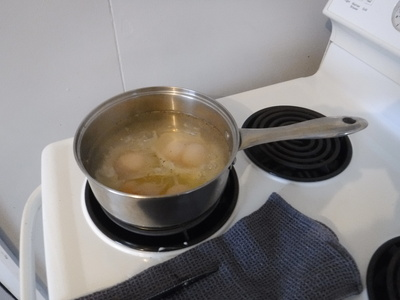
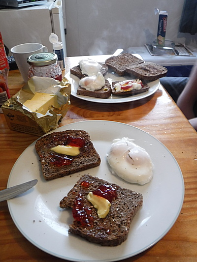
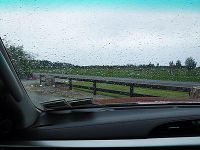
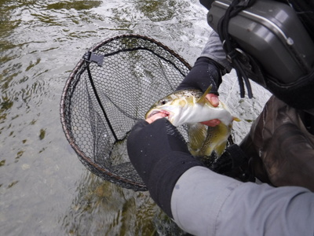
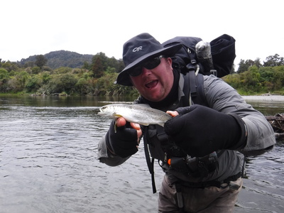

釣行日誌 ＮＺ編 「一期一会の旅：A Sentimental Journey」
銀毛色したブラウン
11/24(SAT)-1
今朝は６時半に起床。ディーンが、何という料理だろうか、沸騰したお湯に卵を割って落として茹でてくれた。ポーチドエッグだったろうか？

それに黒パンとママさん手作りのイチゴジャムで手早く朝食。バカでかい箱で買ってしまったシリアルはほとんど食べていない。(笑)

ディーンはいつも通りお昼のサンドイッチ作りに取りかかり、僕は今回持参した秘密兵器のジョウゴ（100円ショップにて購入）で、オレンジジュースの３リットル大瓶から500mlのペットボトル３本へと小分けで注ぎ込む。８年前は、ミネラルウォーターのペットボトルに水道水を入れていたら、ディーンが
「ゴウ！水くらいオレが買ってやるぞ。」
と言って笑われたので、今年はジュースを持って行くのだ。前回もそうだったが、ニュージーランドでは500mlくらいのペットボトルに入ったミネラルウォーターやジュース類がとても高価！で、１本４NZD（300円ほど）もするのだ。ジュース類は3リットル大瓶でも4ドル、安いスーパーなら3.8$くらいで売っているので、せめてもの節約に詰め替え作戦を取るのだ。
８時半にロッジを出発。出がけには小雨が降っていた。

少し南へ下り、林道を進んで深い森に囲まれた、どん詰まりの空き地にトラックを停める。野鳥が数種類、見事な歌声を披露している。昨日からウェーダーの水漏れがひどかったので、どうせ濡れるからと、今日は靴下を履かずに裸足でネオプレンソックス部に足を入れる。（これが後々大いなる災厄となった....）
釣り支度を整え、２人で小径を森の奥へと進んで行く。途中でホワイトベイト漁師の小屋とトラップ（大型の捕獲網）機材の場所を通り抜け、長く広い汽水域の大淵へと出た。ロッドを継いでラインを通し、今朝はグレイゴーストを結ぶ。10mほど水辺を左側、上流方向へと忍んでいくと、やや距離のある位置にディーンが１尾見つけた。水は透明なので僕にもよく見える。背後にはフラックスの茂みが密集して生えているので、フライが引っかからないようバックキャストを高くして前方に飛ばすが、案の定飛距離が出ない。(泣) そうこうしているうちに今朝１番の魚は深みへと消えてしまった。
その長く深いトロ場を、チェストハイのウェーダーギリギリまで浸かりながらビビりつつ渉る。ディーンはウェストハイのウェーダーだが、彼は大男なので腰までが高く平気である。川底の石はとても滑りやすく、ラバーソールでは神経を使わされた。何とか対岸へとたどり着き、50分ほど右岸側を遡行して行くと、感潮域が終わり川の流れが出てきた。
倒木のグシャグシャの塊の下流側に少しポケットウォーターが出来ており、そこへストリーマーを打ち込んでピッピッと引いてくると、カツンと大人しいアタリが！ 大きくはなさそうなので余裕で上げてくると、40cm級のブラウンだった。

ディーンがフックを外す時に少々血が出たが、水に戻してやると勢いよく深みへと帰って行った。同じポイントには倒木が流れに平行に２本沈んでおり、その間にグレイゴーストを通して引っ張ると、ピクンッと可愛い反応が。ひょいと上げてみると、上流で生まれてこれから河口域に下る途中なのか、銀毛色したブラウン、色もサイズもシラメみたいな１尾が釣れた。

こんなサイズでも大型のストリーマーに飛びつくことが驚きであった。その直後、同じサイズがもう１尾釣れた。
釣行日誌ＮＺ編 目次へ
サイトマップ
ホームへ
お問い合わせ